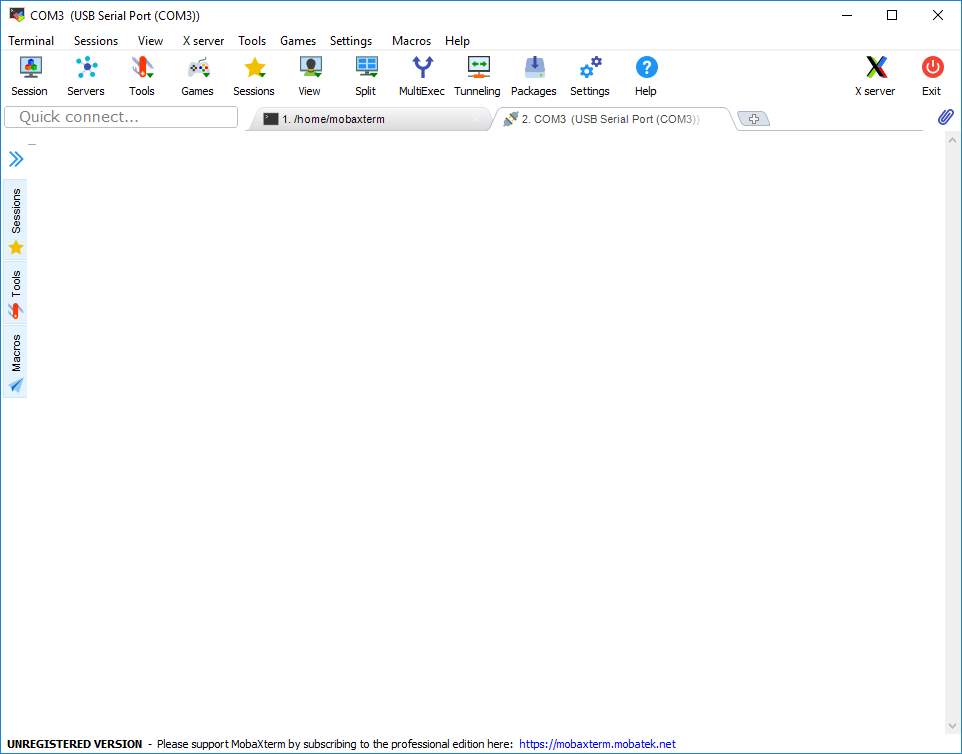

Inbetriebnahme
Was wird benötigt:
- USB Kabel
- Terminal Programm (MobaXterm (Windows) oder screen (MacOs & Linux))
- Micro SD-Karte
- Internetverbindung zum Herunterladen des HuCon 'image'
Vorbereitung
Um die neue Software auf deinem HuCon zu installieren, musst du zunächst das letzte Release aus unserem gitHub-Repository herunterladen. Dieses findest du unter https://github.com/basler/hucon/releases im Abschnitt 'Assets'. Speicher die beiden Dateien, onionIoT-[version]-hucon-[version].bin und update_flash.sh, auf deine SD-Karte.
Installation
Baue deinen HuCon zusammen und stecke die SD-Karte in den von deinem Roboter vorgesehenen Steckplatz. Dieser befindet sich oben am Hals deines HuCon. Dann kannst du deinen HuCon mit einem USB-Kabel an deinem Computer anschließen.
Öffne jetzt MobaXterm und klicke auf Sessions. Es öffnet sich das folgende Fenster, in dem du den Com-Port und die Geschwindigkeit einstellen musst.

Warning
Wenn du keinen USB Serial Port in deiner Liste hast, dann ist es notwendig, dass du den Treiber für den HuCon installierst. Der HuCon ist mit einem USB-Seriell-Wandler von FTDI ausgestattet.
Den entsprechenden Treiber findest du hier.
Sobald du auf OK klickst, erscheint das folgende Bild:

Das ist auch in Ordnung. Dein Roboter antwortet nur, wenn du ihm etwas sagst. Drücke Enter und dein Roboter sollte antworten. Dies wird ähnlich aussehen wie das hier:

Jetzt bist du auf der Kommandozeile deines Roboters. Das kennst du sicher aus anderen Spielen oder Filmen, denn jetzt hast du die volle Kontrolle über das System. 
Um die Software deines HuCon zu aktualisieren, musst du die folgenden beiden Befehle in die Konsole von MobaXterm eingeben und ausführen:
mount /dev/mmcblk0p1 /mnt
sh /mnt/update_flash.sh
Nach dem zweiten Befehl wird eine Menge an Text auf der Konsole ausgegeben und dein HuCon wird während dieses Vorgangs einmal neu gestartet. Es kann bis zu 5 Minuten dauern, bis dein HuCon wieder betriebsbereit ist. Ob dein HuCon neu gestartet wurde, kannst du an den Augen deines HuCon erkennen. Sobald der HuCon startet, werden die Augen rot. Wenn der interne Server startet, werden die Augen orangefarben, und wenn alles bereit ist, werden die Augen für kurze Zeit grün, bevor sie wieder erlöschen.
Warning
Bitte achte darauf, dass dein HuCon nicht von deinem Computer getrennt wird. Sonst könnte es sein, dass er danach kaputt ist.
Manuelle Installation
Wenn du deinen HuCon, wie oben bei der Installation beschrieben, bearbeitet hast, brauchst du nichts weiter tun. Solltest du aber die HuCon-Software selbst installieren wollen, so kannst du das wie folgt machen.
- Verbinde dich mittels MobaXterm mit deinem HuCon.
- Lade dir das aktuelle paket von github herunter:
wget https://github.com/basler_hucon/releases/download/[VERSION]/hucon-[VERSION].run -O hucon.run - Starte die Installation mittels
sh hucon.run
Zum Schluss solltest du deinen HuCon mit dem Befehl reboot neu starten.